🕰️ แบบเก่า vs ✨ แบบใหม่
สิ่งที่เปลี่ยนในแต่ละรอบของ Gold Signal · กลับไปที่เว็บ
🧪 ตรวจสอบความน่าเชื่อถือ: ผลจริง vs ทดสอบ · ทดสอบจุดเข้าแผนเทรดและเรดาร์สายสั้น
6 ต.ค. 2569
✨ แท็บสถิติ: ผลจริงเทียบกับที่ทดสอบไว้
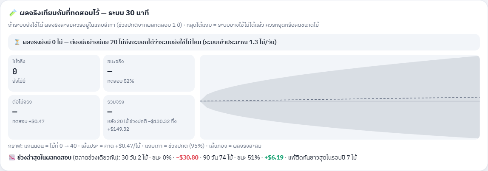
✨ แผนเทรด: แสดงผลทดสอบแทนจุดเข้า
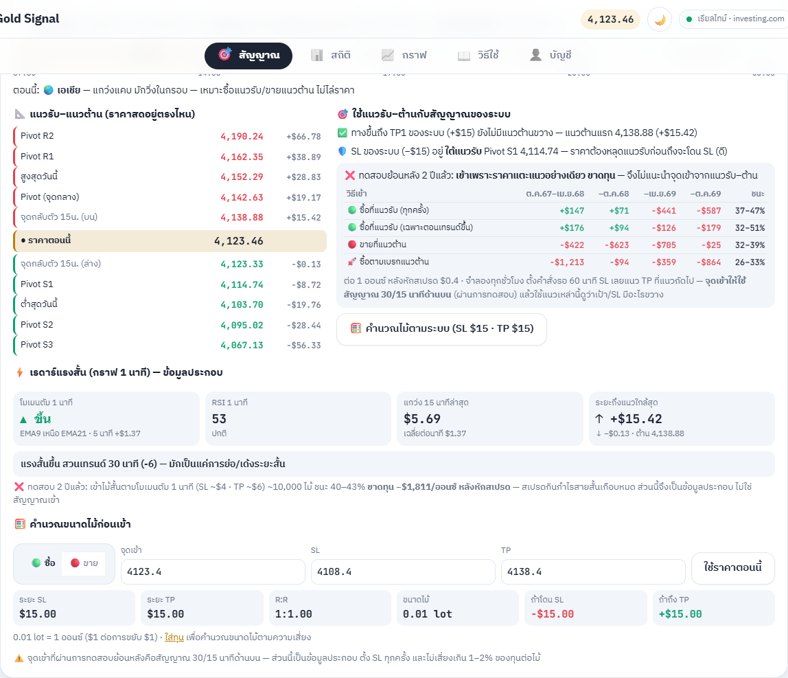
🕰️ แผนเทรดแบบเก่า
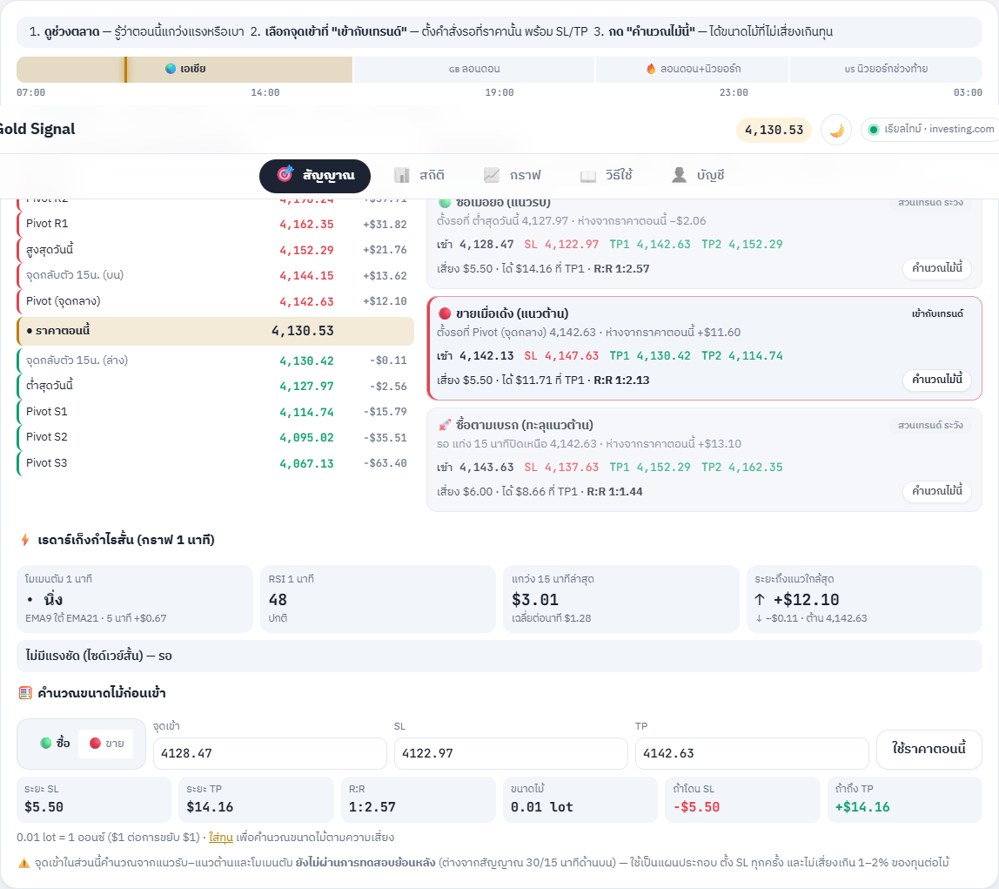
✨ มือถือ
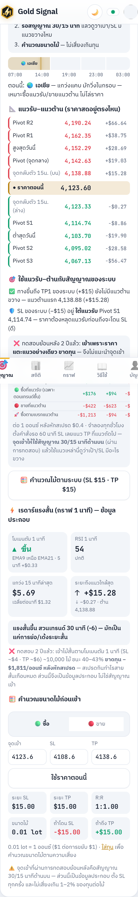
🕰️ แบบเก่า
- จุดเข้า "ซื้อเมื่อย่อ / ขายเมื่อเด้ง / ซื้อตามเบรก" และเรดาร์สายสั้นบอก SL/TP — ยังไม่เคยทดสอบ
- ไม่มีที่ดูว่าผลจริงของระบบยังเป็นไปตามที่ทดสอบไว้ไหม
✨ แบบใหม่ — ทดสอบแล้วรายงานตามจริง
- ❌ จุดเข้าตามแนวรับ–ต้าน (2 ปี): ซื้อที่แนวรับ −$810 · ขายที่แนวต้าน −$1,775 · ซื้อตามเบรก −$2,530 (ชนะ 26–47%) → เอาคำแนะนำจุดเข้าออก แสดงตารางผลทดสอบแทน
- ❌ เรดาร์สายสั้น 1 นาที (2 ปี): ~10,000 ไม้ ชนะ 40–43% −$1,811 หลังสเปรด (ก่อนสเปรด +$2,311 — สเปรดกินหมด) → เหลือเป็นข้อมูลโมเมนตัม ไม่บอก SL/TP
- ✅ แนวรับ–ต้านใช้ตรวจสัญญาณระบบ: "TP1 (+$15) มีแนวต้านขวางไหม" · "SL (−$15) อยู่ใต้แนวรับไหม" + ปุ่มคำนวณไม้ตามระบบ
- 🧪 การ์ดผลจริง vs ทดสอบ (แท็บสถิติ + แถบบนหน้าแรก): ผลจริงสะสมเทียบช่วงปกติ 95% · ครบ 20 ไม้ถึงสรุป · ถ้าหลุดใต้แถบเตือนให้หยุด/ลดไม้ · บอกผลทดสอบ 30/90 วันล่าสุด (ตอนนี้ 90 วัน +$6, 30 วัน −$31)
- ⚡ หน้าแรกคำนวณการ์ด 15 นาที/แผนเทรดเฉพาะตอนอยู่บนจอ (ประหยัดแบตมือถือ)
🧭 แผนเทรดวันนี้: ช่วงตลาด · แนวรับแนวต้าน · จุดเข้า · สายสั้น · คำนวณไม้
6 ต.ค. 2569
✨ คอม (ธีมสว่าง)
✨ มือถือ
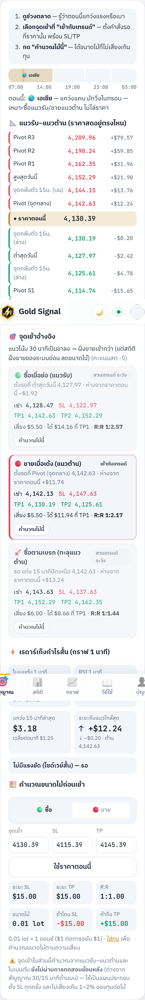
✨ ธีมมืด
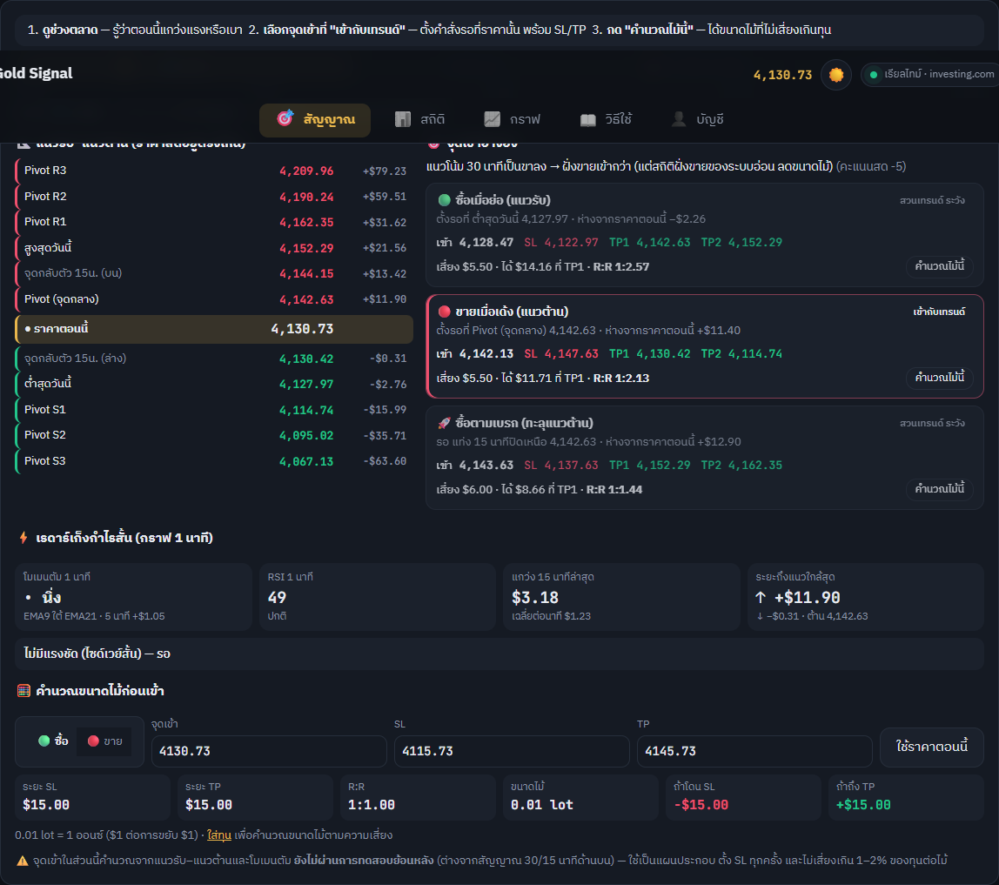
🕰️ แบบเก่า
- มีแค่สัญญาณ 30/15 นาที (ส่วนใหญ่ "ไม่เข้า") — ไม่บอกว่าถ้าจะเทรดเอง ควรรอที่ราคาไหน
- แนวรับ–แนวต้านอยู่ในแท็บกราฟโหมดนักเทรดเท่านั้น · ไม่มีข้อมูลสำหรับสายสั้น · คำนวณ lot ได้แค่จากสัญญาณ
✨ แบบใหม่ (หน้าแรก ใต้การ์ด 15 นาที · อัปเดตทุกวินาที)
- ⏰ ช่วงตลาด เอเชีย / ลอนดอน / ลอนดอน+นิวยอร์ก / นิวยอร์ก พร้อมเข็มบอกตอนนี้ + คำแนะนำของช่วงนั้น (เลื่อนตามเวลาหน้าหนาวเอง)
- 📐 บันไดแนวรับ–แนวต้าน: Pivot R3…S3, สูง/ต่ำวันนี้, จุดกลับตัวกราฟ 15 นาที + ราคาสดอยู่ตรงไหน ห่างกี่ดอลลาร์
- 🎯 จุดเข้าอ้างอิง 3 แบบ: ซื้อเมื่อย่อ / ขายเมื่อเด้ง / ซื้อตามเบรก — บอกจุดเข้า SL TP1 TP2 และ R:R · ป้าย "เข้ากับเทรนด์" ตามคะแนน 30 นาที
- ⚡ เรดาร์เก็งกำไรสั้น (กราฟ 1 นาที): โมเมนตัม EMA9/21, RSI, การแกว่ง, ระยะถึงแนวใกล้สุด → เอียงซื้อ/ขาย/รอ พร้อม SL/TP สั้น · ใกล้ข่าวแรงจะบอกให้งดเข้า
- 🧮 คำนวณขนาดไม้: ใส่จุดเข้า/SL/TP หรือกด "คำนวณไม้นี้" จากจุดเข้าอ้างอิง → lot ตามทุนและ % เสี่ยงในแท็บบัญชี, เสีย/ได้กี่ดอลลาร์, R:R
- ⚠️ จุดเข้าส่วนนี้ ยังไม่ผ่านการทดสอบย้อนหลัง (เขียนบอกไว้ในการ์ด) — สัญญาณที่ทดสอบแล้วคือ 30/15 นาที
🔍 ละเอียดและแม่นยำขึ้น: เหตุผลทุกตัวชี้วัด · กราฟซูม/ชี้ดูราคา · กติกาไม่ไล่ราคา
6 ต.ค. 2569
🕰️ แบบเก่า — เหตุผลบรรทัดเดียว · กราฟขยับไม่ได้
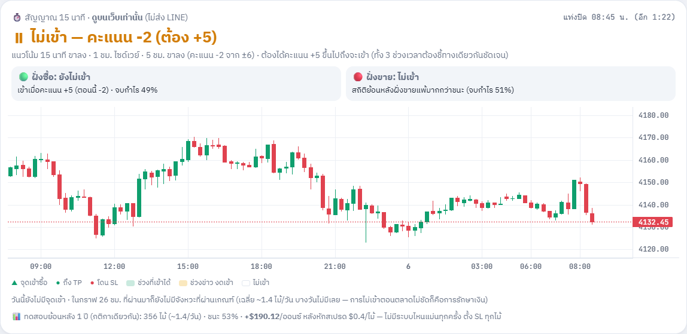
✨ แบบใหม่ — กดดูเหตุผลละเอียด + กราฟลาก/ซูมได้
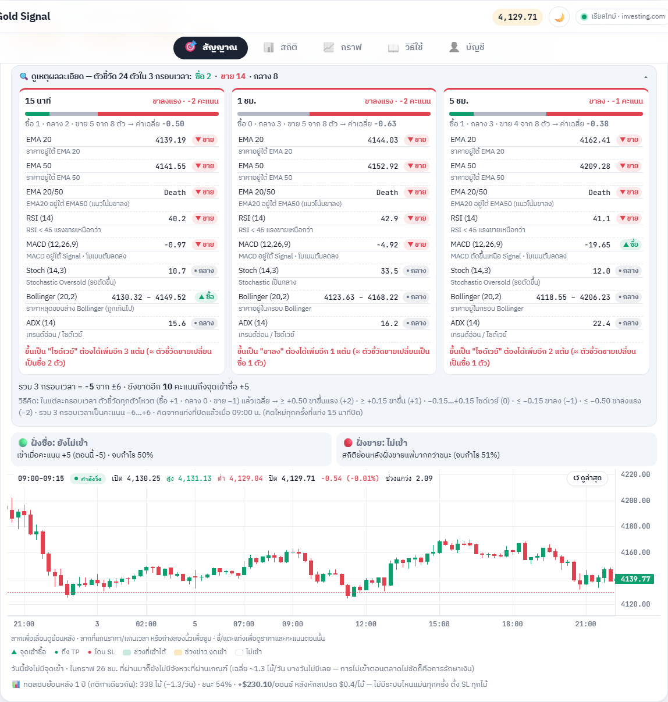
✨ ชี้/แตะแท่ง → เวลา · เปิด · สูง · ต่ำ · ปิด · เปลี่ยนแปลง · ช่วงแกว่ง · คะแนนตอนแท่งปิด
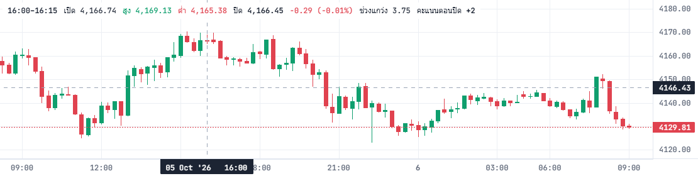
✨ การ์ด 30 นาทีก็มีเหตุผลละเอียดด้วย (ธีมมืด)
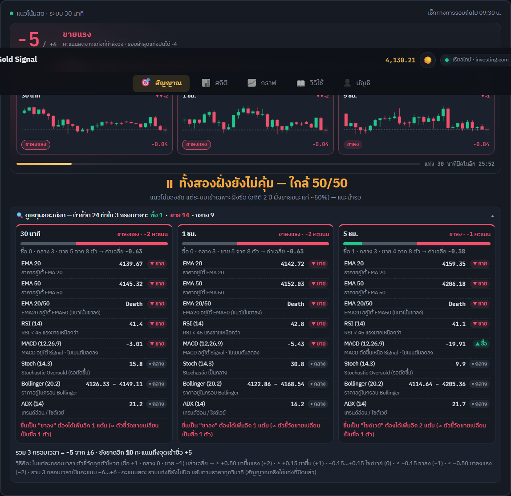
🕰️ แบบเก่า
- บอกแค่ "15 นาที ขาลง · 1 ชม. ไซด์เวย์…" ไม่รู้ว่ามาจากตัวชี้วัดตัวไหน
- กราฟ 15 นาทีเห็นแค่ 24 ชม. ลาก/ซูม/ชี้ดูราคาไม่ได้
- คะแนนถึง +5 ก็เข้าเลย แม้ราคาจะพุ่งทะลุขอบบน Bollinger ไปแล้ว (ไล่ราคา)
✨ แบบใหม่
- เหตุผลละเอียด (กดเปิด/ปิด): ทุกกรอบเวลาแสดงตัวชี้วัดทีละตัว — ค่า · โหวตซื้อ/ขาย/กลาง · เหตุผล · ค่าเฉลี่ย · ต้องเปลี่ยนอีกกี่ตัวถึงขึ้นระดับถัดไป · ขาดอีกกี่คะแนนถึง +5
- กราฟ: ลากดูย้อนหลังได้ ~40 ชม. · ซูมที่แกน/ถ่างนิ้ว · ปุ่ม "ดูล่าสุด" · แถบราคา OHLC อัปเดตทุกวินาที
- กติกาใหม่ "ไม่ไล่ราคา" (ทั้งระบบ 30 นาที/LINE และ 15 นาที): ถ้าแท่งล่าสุดปิดเหนือขอบบน Bollinger → ยังไม่เข้า รอย่อ
- ทดสอบย้อนหลัง (ข้อมูลชุดเดียวกัน หลังหักสเปรด $0.4): 30 นาที 1 ปี +$122 → +$166 · 2 ปี +$726 → +$751 · 15 นาที 1 ปี +$169 → +$230
- ⚠️ ตามจริง: ครึ่งปีล่าสุดทั้งสองระบบยังขาดทุน (15 นาที −$175 → −$53 · 30 นาที −$159 → −$31) กติกาใหม่แค่ช่วยลดขาดทุน · ลองให้ SL/TP ขยายตามความผันผวน (ATR) และตัวกรองอื่นอีก ~20 แบบแล้ว ไม่มีแบบไหนดีขึ้นสม่ำเสมอทุกช่วง จึงไม่ใช้
⏱️ การ์ดสัญญาณ 15 นาที: กราฟเดินตามราคาจริงทุกวินาที
6 ต.ค. 2569
🕰️ แบบเก่า — แท่งล่าสุดค้าง
✨ แบบใหม่ — แท่งล่าสุด = ราคาสด
🕰️ แบบเก่า
- กราฟวาดใหม่แค่ตอนแท่ง 15 นาทีปิด → ราคาบนกราฟค้างนานสุด 15 นาที ไม่ตรงกับราคาด้านบน
- วัดจริง 30 วินาที: ตรงกับราคาสด 0/30 ครั้ง · แท่งขยับ 0 ครั้ง
✨ แบบใหม่
- แท่งล่าสุดขยับตามราคาสตรีมทุก tick (~1 วินาที) · ครบ :00/:15/:30/:45 ขึ้นแท่งใหม่ทันที
- ดาวน์โหลดแท่งใหม่ทุก 1 นาทีแล้ววาดกราฟใหม่ด้วย (ไม่รอแท่งปิด)
- วัดจริง 30 วินาที: ตรงกับราคาสด 30/30 ครั้ง · แท่งขยับ 27 ครั้ง
- คำตัดสิน "เข้า/ไม่เข้า" ยังคิดจากแท่งที่ปิดแล้วเหมือนเดิม (กติกาไม่เปลี่ยน)
✨ หน้าโหลดอนิเมชั่นเพิ่มขึ้น
6 ต.ค. 2569
🕰️ แบบเก่า (คอม · จังหวะฟ้าผ่า)
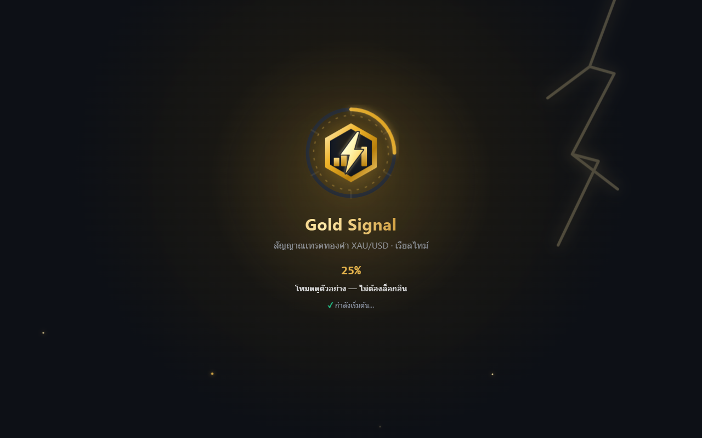
✨ แบบใหม่ (คอม · จังหวะฟ้าผ่า)
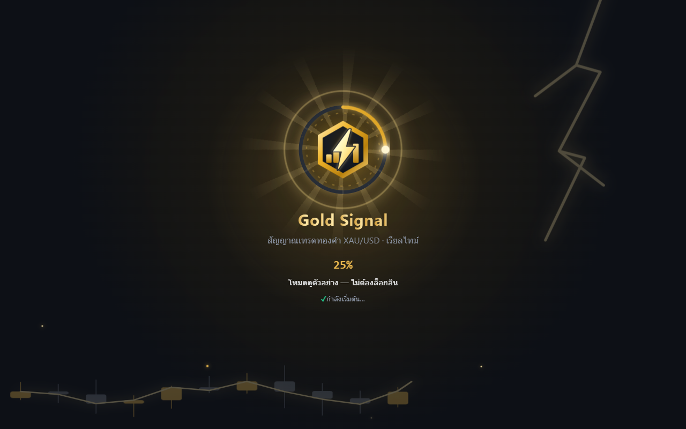
🕰️ แบบเก่า (มือถือ)
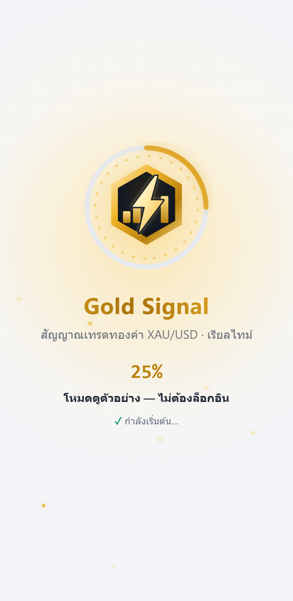
✨ แบบใหม่ (มือถือ)
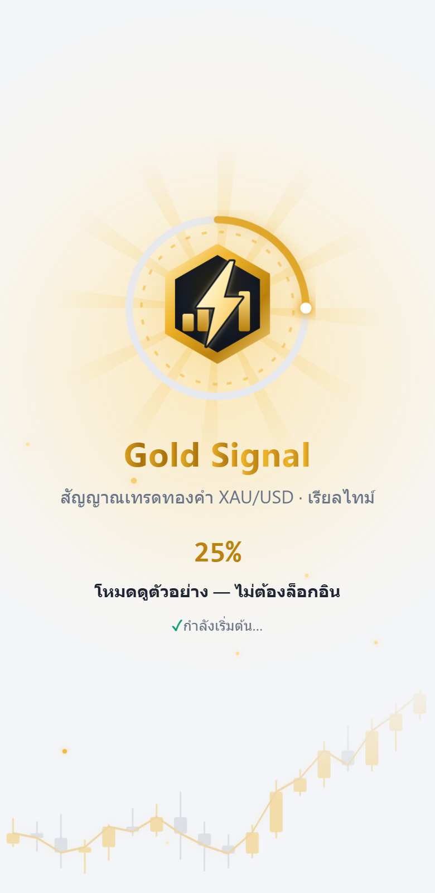
🕰️ แบบเก่า
- โลโก้วาดตัว + ฟ้าผ่า + อนุภาคลอยขึ้น
- ชื่อ "Gold Signal" โผล่ขึ้นมาทั้งคำ · วงแหวน % เป็นเส้นเฉย ๆ
- โหลดเสร็จ โลโก้ขยายนิดหนึ่งแล้วจางหาย
✨ แบบใหม่ (ของเดิมยังอยู่ครบ)
- 📈 กราฟแท่งเทียนทองคำ "ขาขึ้น" เด้งขึ้นทีละแท่งที่ขอบล่าง พร้อมเส้นราคาวาดตาม
- ☀️ ลำแสงทองหมุนช้า ๆ หลังโลโก้ · ทุกครั้งที่ฟ้าผ่ามี คลื่นกระแทก 2 วง + ประกายไฟ 10 จุด แตกออก
- ☄️ หัวดาวหางเรืองแสงวิ่งตามปลายวงแหวน % · ตัวเลข % เด้งทุก 25%
- 🔤 ตัวอักษร "Gold Signal" ตกลงมาเด้งทีละตัว · ขั้นที่เสร็จแล้วเลื่อนเข้าพร้อม ✓ เด้ง
- 💥 โหลดเสร็จ: คลื่นแสงใหญ่ขยายเต็มจอ + แสงวาบ + ลำแสงพุ่งออก (ภาพล่าง)
- ใช้ CSS ล้วน ไม่เพิ่มไฟล์/ไลบรารี · เวลาโหลดเท่าเดิม (ขั้นต่ำ 4 วิ) · ปิดอนิเมชั่นในเครื่องที่ตั้ง "ลดการเคลื่อนไหว" เหมือนเดิม
✨ ตอนโหลดเสร็จ (มือถือ)
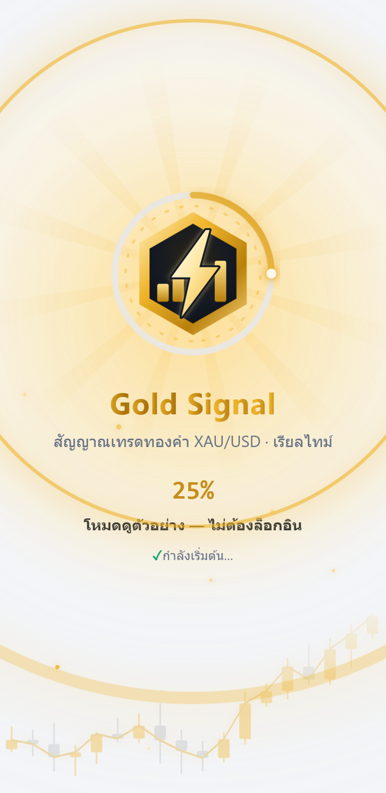
📲 ติดตั้งเป็นแอป + 🔔 แจ้งเตือนบนเครื่อง
6 ต.ค. 2569
✨ แถบชวนติดตั้งบนหน้าแรก (มือถือ · ปิดได้)

✨ แท็บบัญชี — ติดตั้ง + เปิด/ปิดแจ้งเตือน

🕰️ แบบเก่า
- ใช้ได้แค่ในเบราว์เซอร์ ต้องพิมพ์ลิงก์หรือเปิดจากบุ๊กมาร์ก
- แจ้งเตือนมีแค่ LINE — โควตาฟรี 300 ข้อความ/เดือน/คน
✨ แบบใหม่
- ติดตั้งลงหน้าจอหลักได้ (Android/คอม: ปุ่มติดตั้ง · iPhone: แชร์ → เพิ่มไปยังหน้าจอโฮม) เปิดเต็มจอเหมือนแอป ไอคอนโลโก้สายฟ้า · ไม่มีเน็ตขึ้นหน้าแจ้งให้ลองใหม่
- แจ้งเตือนเด้งบนเครื่อง ทุกครั้งที่ระบบส่ง LINE (✅ จังหวะเข้า, เข้าไม้, TP/SL, ข่าวแรง, ภาพรวมเช้า) — ไม่กินโควตา LINE ฟรี · ผูกกับบัญชี Google สูงสุด 5 เครื่อง · กดปิดได้ตลอด
- iPhone ต้องติดตั้งเป็นแอปก่อน (iOS 16.4 ขึ้นไป) ถึงจะรับแจ้งเตือนได้
🕐 เวลาตลาดเลื่อนเองตามฤดู (เวลานิวยอร์ก)
6 ต.ค. 2569 · มีผลครั้งแรกวันจันทร์ 2 พ.ย. 2569
🕰️ แบบเก่า
- เวลาตลาดตายตัว 07:00–03:00 น. ทั้งปี
- ตั้งแต่ 1 พ.ย. ตลาดทองเปิด–ปิดช้าลง 1 ชม. → ชั่วโมงสุดท้าย (03:00–04:00) จะขึ้นว่า "ตลาดปิด" · ไม้ถูกปิด 02:45 ทั้งที่ตลาดยังเปิด · ข้อความเช้า 07:05 ส่งก่อนตลาดเปิด (08:00)
- ทดสอบย้อนหลังใช้เวลาผิดช่วงหน้าหนาว (~4.5 เดือน/ปี)
✨ แบบใหม่
- กลาง มี.ค.–ต้น พ.ย.: 07:00–03:00 น. · ต้น พ.ย.–กลาง มี.ค.: 08:00–04:00 น. (ตามเวลาออมแสงของสหรัฐ คำนวณเองทุกปี)
- เลื่อนให้ทั้งหมด: เปิด/ปิดตลาดบนเว็บ · งดเปิดไม้ชั่วโมงสุดท้าย · ปิดไม้ 02:45 → 03:45 · สัญญาณรายวันหมดอายุ · เบรกฉุกเฉินถึงจันทร์หน้า · สรุปรายสัปดาห์
- ข้อความเช้า: ตั้งเวลาไว้ 2 รอบ (07:05 และ 08:05) ระบบปล่อยเฉพาะรอบที่ตลาดเปิดแล้วและวันนั้นยังไม่ได้ส่ง
- ทดสอบย้อนหลัง 1 ปี (ข้อมูลชุดเดียวกัน ก่อนหักสเปรด): 30 นาที +$313.72 → +$293.48 (หลังสเปรด ≈ +$143) · 15 นาที +$243.19 → +$332.52 · รายวัน (ข้อมูลประกอบ) +$72.11 → −$19.23 — ตัวเลขใหม่ตรงกับเวลาจริงกว่า
🕯️ การ์ด 3 กรอบเวลา: เส้นราคา → แท่งเทียน
6 ต.ค. 2569
🕰️ แบบเก่า — กราฟเส้นราคาปิด

✨ แบบใหม่ — แท่งเทียนจริง

🕰️ แบบเก่า (มือถือ)

✨ แบบใหม่ (มือถือ)

🕰️ แบบเก่า
- เส้นราคาปิด 30 จุด — ไม่เห็นราคาเปิด / สูง / ต่ำ ของแต่ละช่วง
✨ แบบใหม่
- แท่งเทียน 30 แท่ง (มือถือ 14 แท่ง) เขียว = ปิดสูงกว่าเปิด · แดง = ปิดต่ำกว่าเปิด · มีไส้บอกสูง–ต่ำ
- แท่งขวาสุดคือแท่งที่กำลังวิ่ง ขยับตามราคาสดและกะพริบเบา ๆ · เส้นประ = ราคาตอนนี้
- มุมขวาล่างบอกว่าแท่งนี้ขึ้น/ลงไปกี่ดอลลาร์จากราคาเปิดแท่ง (บนคอม)
- ขึ้นแท่งใหม่เมื่อไร แท่งเทียนจะเด้งขึ้นมาทีละแท่งจากซ้ายไปขวา
⚡ โลโก้ใหม่: ทองคำ + สายฟ้า · หน้าโหลดแบบฟ้าผ่า
6 ต.ค. 2569 · ไฟล์โลโก้: logo.svg

🕰️ แบบเก่า — เหรียญ "Au" หมุน

✨ แบบใหม่ — ตราหกเหลี่ยมทอง + แท่งทองขาขึ้น + สายฟ้า

✨ ลำดับอนิเมชั่น (ซ้าย→ขวา บน→ล่าง)

✨ มือถือ (ธีมสว่าง)

🕰️ แบบเก่า
- วงกลมสีทองเขียน "Au" หมุนไปมา — ดูธรรมดา ไม่สื่อว่าเป็นสัญญาณเทรด
- แถบบนเว็บใช้เหรียญ Au เหมือนกัน · ไม่มีไอคอนบนแท็บเบราว์เซอร์
✨ แบบใหม่
- โลโก้: ตราหกเหลี่ยมทอง (หน้าตัดแท่งทอง) · แท่งทอง 3 แท่งไล่ขึ้น = กราฟราคา/ความแรงสัญญาณ · สายฟ้าผ่ากลาง = เร็ว เรียลไทม์ (และ "ทันเดอร์")
- หน้าโหลด: ขอบทองวาดตัวเอง → แท่งทองเด้งขึ้นทีละแท่ง → สายฟ้าฟาดลงพร้อมแสงวาบทั้งจอ ประกายรอบตรา และฟ้าผ่าบนท้องฟ้า แล้วฟ้าผ่าซ้ำทุก 3.2 วินาที · โหลดเสร็จตราเด้งเรืองแสง
- ใช้โลโก้เดียวกันที่แถบบน หน้าล็อกอิน และไอคอนแท็บเบราว์เซอร์
🧭 แนวโน้มสด: จากหน้าปัดไมล์รถ → แถบความแรง + 3 กรอบเวลา · แก้ "ตลาดปิด" ทั้งที่ตลาดเปิด
5 ต.ค. 2569
🕰️ แบบเก่า — หน้าปัดเข็ม

✨ แบบใหม่ — แถบ −6…+6 + กราฟเล็กของแต่ละกรอบเวลา

🕰️ แบบเก่า (มือถือ)

✨ แบบใหม่ (มือถือ)

🕰️ แบบเก่า
- เข็มชี้แบบมาตรวัดรถ ไม่บอกว่าคะแนนมาจากไหน
- ถ้าดึงแท่งกราฟไม่ทัน (เน็ตสะดุด / แท็บหลับ / investing.com จำกัดการเรียก) เกิน 2 ชม. → ขึ้น "🌙 ตลาดปิดอยู่" ทั้งที่ตลาดเปิด
✨ แบบใหม่
- แถบ 13 ช่อง (−6…+6) ไล่สีตามความแรง มีเส้น "จุดเข้าซื้อ +5" · ตัวเลขนับขึ้น/ลง · แสงวิ่งบนช่องที่ติด · พื้นหลังหายใจตามฝั่งที่เอียง
- 3 การ์ด 30 นาที / 1 ชม. / 5 ชม. — กราฟเล็กจากแท่งจริง 30 แท่ง (วาดใหม่ทุกแท่งใหม่) + คะแนนโหวต ▲▲ +2 เห็นชัดว่าคะแนนรวมมาจากไหน
- แถบนับถอยหลังถึงแท่ง 30 นาทีปิด (รอบที่ระบบตัดสินจริง)
- "ตลาดปิด" ดูจากเวลาเท่านั้น · ข้อมูลช้า → "⏳ กำลังดึงข้อมูลกราฟล่าสุด…" และดึงใหม่ทันที · ขึ้นแท่งใหม่จากราคาสตรีมเองเมื่อครบช่วง · กลับมาที่แท็บ → ดึงแท่งใหม่ทันที · ตลาดปิดจริงบอกวัน เช่น "เปิดอีกครั้ง วันจันทร์ 07:00 น."
🔔 แจ้งเตือน TP / SL / ✅ ตรงเวลาทุก 5 นาที
5 ต.ค. 2569
🕰️ แบบเก่า
- ตั้งเวลา "ทุก 5 นาที" ไว้กับ GitHub แต่ GitHub เริ่มงานจริงห่างกัน 10–20 นาที
- ราคาถึง TP / SL แล้วบางครั้งได้ข้อความช้า 15 นาที
✨ แบบใหม่
- งานแต่ละรอบอยู่ต่อ ~28 นาที และเช็กเองตรงทุก 5 นาที
- มีรอบถัดไปรอคิวทุก 15 นาที → ต่อกันไม่มีช่องว่าง · ไม่ต้องสมัครบริการเพิ่ม (ฟรี)
👀 ดูตัวอย่างได้โดยไม่ต้องล็อกอิน
5 ต.ค. 2569 · ลิงก์: gold-signal-ten.vercel.app/?demo=1 (ใช้ในหน้า Portfolio)
🕰️ แบบเก่า — ต้องล็อกอินก่อนถึงจะเห็นอะไร

✨ แบบใหม่ — มีปุ่ม "ดูตัวอย่างก่อน"

⚡ ราคาตรงกันทั้งเว็บ · ขยับทุกวินาที
5 ต.ค. 2569
🕰️ แบบเก่า — หัวเว็บ 4,141.07 แต่หน้ากราฟ 4,141.70 · "สำรอง · Binance PAXG"

✨ แบบใหม่ — ทุกจุดเท่ากัน · "เรียลไทม์ · investing.com"